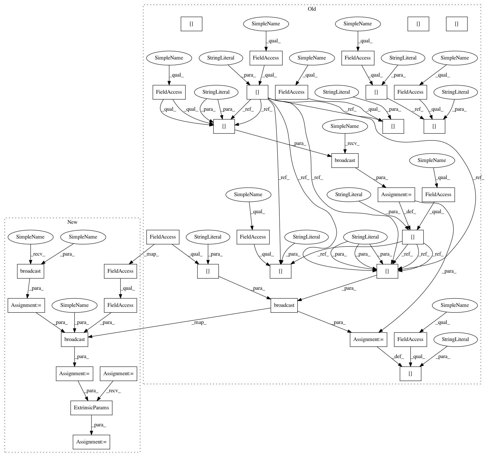

69745fe683f45cf435fa68a8f098c306342372e4,paysage/layers.py,GaussianLayer,update,#GaussianLayer#Any#Any#Any#,500
Before Change
None
self.ext_params["mean"] = be.dot(scaled_units[0], weights[0])
for i in range(1, len(weights)):
self.ext_params["mean"] += be.dot(scaled_units[i], weights[i])
if beta is not None:
self.ext_params["mean"] *= be.broadcast(
beta,
self.ext_params["mean"]
)
self.ext_params["mean"] += be.broadcast(
self.int_params["loc"],
self.ext_params["mean"]
)
self.ext_params["variance"] = be.broadcast(
be.exp(self.int_params["log_var"]),
self.ext_params["mean"]
)
def derivatives(self, vis, hid, weights, beta=None):
Compute the derivatives of the intrinsic layer parameters.
After Change
for i in range(1, len(weights)):
mean += be.dot(scaled_units[i], weights[i])
if beta is not None:
mean *= be.broadcast(beta, mean)
mean += be.broadcast(self.int_params.loc, mean)
var = be.broadcast(be.exp(self.int_params.log_var), mean)
self.ext_params = GaussianLayer.ExtrinsicParams(mean, var)
def derivatives(self, vis, hid, weights, beta=None):
Compute the derivatives of the intrinsic layer parameters.
In pattern: SUPERPATTERN
Frequency: 3
Non-data size: 35
Instances
Project Name: drckf/paysage
Commit Name: 69745fe683f45cf435fa68a8f098c306342372e4
Time: 2017-03-31
Author: charleskennethfisher@gmail.com
File Name: paysage/layers.py
Class Name: GaussianLayer
Method Name: update
Project Name: drckf/paysage
Commit Name: 3ef6396af599fec5e899ed2674f7bb60d98a88a4
Time: 2017-03-31
Author: charleskennethfisher@gmail.com
File Name: paysage/layers.py
Class Name: BernoulliLayer
Method Name: update
Project Name: drckf/paysage
Commit Name: 69745fe683f45cf435fa68a8f098c306342372e4
Time: 2017-03-31
Author: charleskennethfisher@gmail.com
File Name: paysage/layers.py
Class Name: GaussianLayer
Method Name: update
Project Name: drckf/paysage
Commit Name: b326b8034d5e8973c8aa9fbb5427d23963a430f8
Time: 2017-03-31
Author: charleskennethfisher@gmail.com
File Name: paysage/layers.py
Class Name: ExponentialLayer
Method Name: update